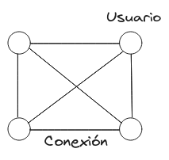
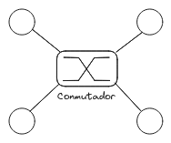
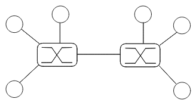
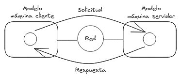
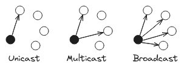
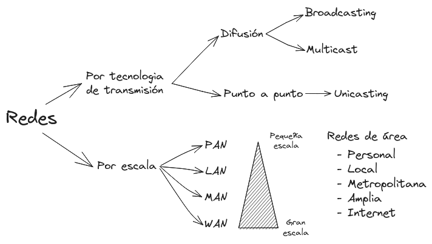

Información
Ana Claudio Zenteno
Cubículo 103-CCO5
Forma de Evaluación
30% 3 Exámenes (1 examen cada 2 unidades) 20% Tareas 20% Proyecto 30% Prácticas
Redes de computadoras
Un conjunto de computadoras autónomas interconectadas
Una red de computadoras es una serie de dispositivos conectados entre si, con la capacidad de comunicarse y compartir recursos a través de medios de transmisión alámbricos e inalámbricos, permitiendo la colaboración entre usuarios y dispositivos en diferentes ubicaciones geográficas.
Antecedentes
La solución trivial seria conectar a todos los dispositivos con todos, pero es altamente ineficiente.

Una solución es asignar un conmutador para descongestionar el trafico.

En los inicios de la telefonía el conmutador era una persona que gestionaba las conexiones a mano.
Posteriormente se comenzó a usar un numero de teléfono para que un conmutador electrónico llamado central supiera con que lineas realizar la conexión.
También las centrales que se encuentren en dos zonas diferentes se pueden comunicar entre si.

Interoperatibilidad
Es la capacidad de las plataformas digitales de intercambiar información de manera uniforme y eficiente usando protocolos comunes de comunicación.
Nota
- Internet es una red de redes
- Web es un sistema distribuido que se ejecuta sobre Internet
- Ni internet ni web son una red de computadoras
Aplicaciones
Modelo Cliente Servidor

Clasificación de redes
- Por tecnología de transmisión
- Difusión
- Broadcasting: Cualquiera tiene acceso
- Multicast: "Un curso privado con acceso de paga"
- Punto a Punto
- Unicasting: "Un torrent"
- Difusión

- Por escala
- PAN: Personal Area Network, cercano al punto de acceso
- LAN: Local Area Network, situado en el mismo edificio o área cercana
- MAN: Metropolitan Area Network, cobertura a una área extensa
- WAN: Wide Area Network, cubre grandes áreas geográficas

Definiciones de Red de Computadoras
Definición 1
Una red de computadoras es un conjunto de dispositivos electrónicos interconectados, como computadoras, servidores, impresoras y dispositivos móviles, que pueden comunicarse y compartir recursos, como archivos y servicios, a través de medios de transmisión como cables o conexiones inalámbricas. Esta interconexión permite el intercambio de información y la colaboración entre usuarios y dispositivos en diferentes ubicaciones geográficas.
Definición 2
Una red de computadoras es una infraestructura que permite la interconexión de dispositivos electrónicos a través de medios físicos y protocolos de comunicación. Su propósito es facilitar el intercambio de datos, recursos y servicios entre los nodos de la red, lo que puede incluir la transmisión de información, la compartición de archivos y la ejecución de aplicaciones distribuidas.
Definición 3
Una red de computadoras es un conjunto de dispositivos electrónicos conectados entre sí con el objetivo de compartir recursos y comunicarse de manera efectiva. Estos dispositivos, también conocidos como nodos, pueden variar desde computadoras y servidores hasta dispositivos más pequeños como teléfonos inteligentes y dispositivos IoT (Internet de las cosas). La red de computadoras utiliza protocolos y tecnologías específicas para facilitar la transferencia de datos y la colaboración entre usuarios.
Fuentes
- Tanenbaum, A. S., & Wetherall, D. J. (2011). Redes de Computadoras. Pearson Educación.
- Techopedia. (7 de agosto de 2023). Computer Network. https://www.techopedia.com/definition/25597/computer-network
- Cisco. (7 de agosto de 2023). What Is a Computer Network? https://www.cisco.com/c/en/us/solutions/small-business/resource-center/networking/what-is-a-computer-network.html